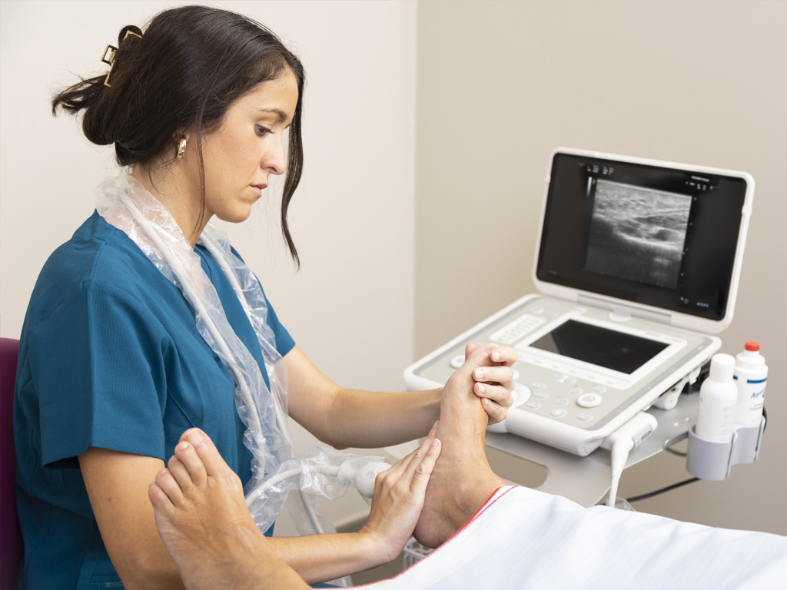
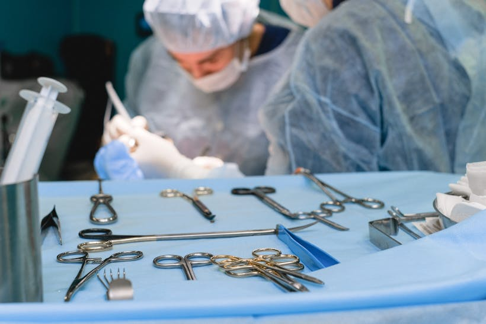
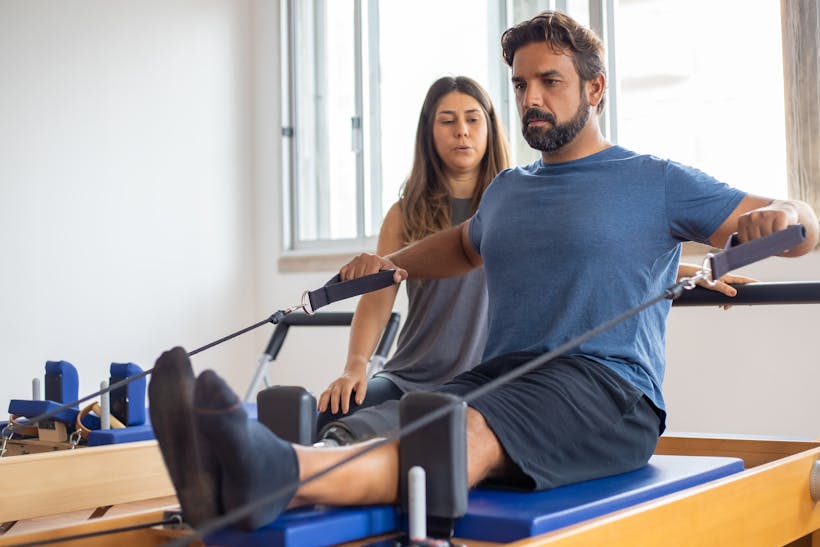
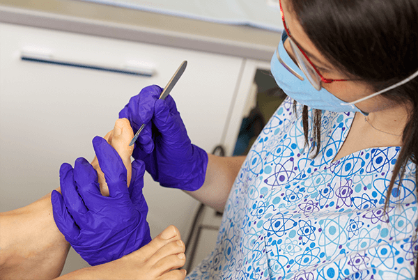
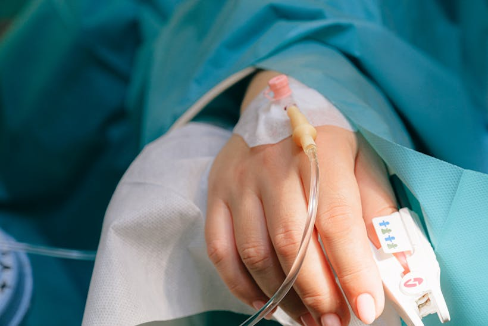

Eventos
Tratamos hallux valgus, dedos en garra, espolones y más con técnicas MIS de vanguardia: anestesia local, deambulación inmediata y recuperación en días. Combinamos experiencia clínica con la más alta especialización.

La clínica podológica Santiago Nieto lleva atendiendo los pies de sus pacientes desde el año 1988. Nuestra labor persigue el cuidado y tratamiento de las dolencias y deformidades que afectan a los pies, buscando siempre la solución más satisfactoria.
La formación continua y la innovación en los tratamientos nos convierte en una clínica con un alto grado de satisfacción. El control permanente en la evolución de los tratamientos, de manera personalizada, nos permite culminar con éxito cada caso.
Dinos lo que sientes y te mostramos las soluciones más adecuadas para ti.
Deformidad dolorosa del dedo gordo con bulto lateral que dificulta el calzado y la marcha.
Ver solucionesFascitis plantar o espolón calcáneo: dolor agudo al levantarte por las mañanas o tras estar sentado.
Ver solucionesDeformidad que encorva los dedos, genera rozaduras y durezas en el dorso al contactar con el calzado.
Ver solucionesAcumulación de piel endurecida por presión o fricción. Pueden generar dolor intenso si no se tratan.
Ver solucionesFascitis, tendinitis, periostitis, esguinces de repetición y otras lesiones vinculadas a la actividad física.
Ver solucionesOnicomicosis: uñas amarillentas, engrosadas o quebradizas por infección fúngica. Tratamiento sin dolor.
Ver solucionesLa uña crece hacia la piel lateral generando dolor, inflamación e infección. Solución rápida y definitiva.
Ver solucionesMuchos dolores articulares tienen origen en una pisada deficiente. Corregimos desde la base.
Ver solucionesOfrecemos una amplia gama de servicios podológicos con técnicas avanzadas para el cuidado integral de tus pies.

Técnicas de cirugía mínimamente invasiva (MIS) con anestesia local y deambulación inmediata. Hallux valgus, dedos en garra, espolones y más.

Plantillas y ortesis a medida con fines correctores para un apoyo correcto del pie. Fabricación personalizada.
Análisis biomecánico, estudio de la pisada y tratamiento de lesiones deportivas. Prevención y rendimiento.

Cuidados rutinarios: corte de uñas, deslaminación de durezas y callosidades. Mantenimiento periódico.
Terapia acústica de alta energía para aliviar inflamación, dolor y promover la rápida recuperación tisular.
Diagnóstico en tiempo real de patologías del tejido blando: músculos, ligamentos, tendones y nervios.

Láser diodo para lesiones osteomusculares, ligamentosas, cirugía cutánea y tratamiento de inflamación.
Pide tu cita sin compromiso. Te atendemos de lunes a viernes.
Profesionales con formación continua y amplia experiencia clínica al servicio de tu salud.
Podólogo - Director clínico
Podóloga
Me han hecho cirugía en varios dedos de los pies por un problema de artrosis que me estaba invalidando. En mi caso, no fue fácil encontrar un centro donde me ofrecieran una solución. La experiencia buenísima, grandes profesionales y un trato cercano como personas.
Trato exquisito y gran profesionalidad. Estoy muy satisfecha con el resultado de la operación, la anestesia que me sugirieron y las visitas de seguimiento posteriores. Especial mención para la anestesista.
Maravilloso, nunca me he sentido tan a gusto en un podólogo. Pruebas, radiografías y solución al momento. Una auténtica maravilla. Y sobre todo quería agradecer el trato recibido y las explicaciones dadas. Sin duda recomendado 100%.
Toda la familia llevamos muchísimos años en su consulta. Buen equipo, buen trato y mejor empatía. Desde luego mi familia y yo confiamos en este gran profesional.
Todas las autorizaciones y certificaciones del Gobierno Vasco para garantizar máxima calidad y seguridad.
Departamento de Salud del Gobierno Vasco. Registro 48C.2.2.8622
Informe n. 5792 del Departamento de Sanidad del Gobierno Vasco
Fabricación y venta de productos a medida (PSM: EU 2015 PODO 139)
Inscripción en la Agencia Española de Protección de Datos (AEPD)
Plan de gestión de residuos sanitarios clínicos aprobado oficialmente
Registro de publicidad sanitaria autorizada RPS: 255/18


Pide tu cita o resuelve cualquier duda. Estamos aqui para ayudarte.
| Lunes - Jueves | 9:00 - 13:30 / 16:00 - 20:00 |
| Viernes | 9:00 - 15:00 |
| Sábados y Domingos | Cerrado |